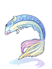

File list
This special page shows all uploaded files.
{kind=link}
{kind=link}
| Date | Name | Thumbnail | Size | User | Description | Versions |
|---|---|---|---|---|---|---|
| 17:32, 3 November 2015 | Discord.png (file) | 2 KB | Adri | 1 | ||
| 17:32, 3 November 2015 | Facebook.png (file) | 18 KB | Adri | 2 | ||
| 14:09, 3 November 2015 | Wickebine.png (file) |  |
4 KB | Adri | 1 | |
| 14:08, 3 November 2015 | SyringeInMouth.png (file) | 4 KB | Adri | 1 | ||
| 14:07, 3 November 2015 | SpiritWhispers.png (file) |  |
5 KB | Adri | 1 | |
| 14:07, 3 November 2015 | SoftSheepHat.png (file) | 8 KB | Adri | 1 | ||
| 14:07, 3 November 2015 | RidewordHat.png (file) |  |
7 KB | Adri | 1 | |
| 14:06, 3 November 2015 | PuppyHat.png (file) | 9 KB | Adri | 1 | ||
| 13:59, 3 November 2015 | PecopecoHairband.png (file) | 6 KB | Adri | 1 | ||
| 13:57, 3 November 2015 | OrangeInMouth.png (file) |  |
9 KB | Adri | 1 | |
| 13:55, 3 November 2015 | NekomimiHat.png (file) |  |
10 KB | Adri | 1 | |
| 13:44, 3 November 2015 | MusketeerHat.png (file) | 9 KB | Adri | 1 | ||
| 13:36, 3 November 2015 | FlowerCrown.png (file) |  |
8 KB | Adri | 1 | |
| 13:35, 3 November 2015 | FishInMouth.png (file) |  | 8 KB | Adri | 1 | |
| 13:32, 3 November 2015 | DonutInMouth.png (file) |  |
7 KB | Adri | 1 | |
| 13:28, 3 November 2015 | CherryTwig.png (file) | 7 KB | Adri | 1 | ||
| 13:19, 3 November 2015 | ElvenEars.png (file) | 4 KB | Adri | 1 | ||
| 09:36, 2 November 2015 | Msm6.png (file) |  |
56 KB | Cosmos | 1 | |
| 09:36, 2 November 2015 | Msm5.png (file) | 73 KB | Cosmos | 1 | ||
| 09:36, 2 November 2015 | Msm4.png (file) | 750 bytes | Cosmos | 1 | ||
| 09:35, 2 November 2015 | Msm3.gif (file) |  |
453 bytes | Cosmos | 1 | |
| 09:35, 2 November 2015 | Msm2.gif (file) |  |
351 bytes | Cosmos | 1 | |
| 03:28, 2 November 2015 | Halves.png (file) |  |
501 KB | Halves | Profile Image for Halves. | 1 |
| 05:32, 31 October 2015 | FAQAzzyAI07.jpg (file) | 161 KB | Renata | 1 | ||
| 05:27, 31 October 2015 | FAQAzzyAI06.png (file) | 42 KB | Renata | 1 | ||
| 04:57, 31 October 2015 | FAQAzzyAI05.png (file) | 40 KB | Renata | 1 | ||
| 03:56, 31 October 2015 | FAQAzzyAI04.png (file) | 44 KB | Renata | 1 | ||
| 03:45, 31 October 2015 | FAQAzzyAI03.png (file) | 20 KB | Renata | 1 | ||
| 03:25, 31 October 2015 | FAQAzzyAI02.png (file) | 38 KB | Renata | 1 | ||
| 03:17, 31 October 2015 | FAQAzzyAI01.png (file) | 43 KB | Renata | 1 | ||
| 03:14, 31 October 2015 | FAQAzzyAI00.png (file) |  |
10 KB | Renata | 1 | |
| 11:47, 10 October 2015 | MH OctobroLastStage.jpg (file) | 659 KB | Renata | 1 | ||
| 11:41, 10 October 2015 | MH OctobroMap.jpg (file) | 8 KB | Renata | 1 | ||
| 11:01, 10 October 2015 | MH OctobroLgndryPirate.jpg (file) | 99 KB | Renata | 1 | ||
| 11:00, 10 October 2015 | MH OctobroSerenity.jpg (file) | 96 KB | Renata | 1 | ||
| 10:06, 10 October 2015 | MH OctobroJollyRoger.jpg (file) | 22 KB | Renata | 1 | ||
| 10:03, 10 October 2015 | MH OctobroCrown.jpg (file) | 18 KB | Renata | 1 | ||
| 10:25, 9 October 2015 | MH OctoEntrance.jpg (file) |  |
68 KB | Renata | 1 | |
| 01:30, 9 October 2015 | Anodyne.png (file) |  |
443 bytes | AloeLeaflet | 1 | |
| 01:04, 9 October 2015 | Harvester Hat.png (file) | 526 bytes | AloeLeaflet | 1 | ||
| 01:02, 9 October 2015 | Bomb Mushroom Spore.png (file) |  |
520 bytes | AloeLeaflet | 1 | |
| 00:16, 9 October 2015 | Thorn Wall.png (file) | 1 KB | AloeLeaflet | 1 | ||
| 00:16, 9 October 2015 | Summon Flora.png (file) | 357 bytes | AloeLeaflet | 1 | ||
| 00:16, 9 October 2015 | Spore Explosion.png (file) | 1 KB | AloeLeaflet | 1 | ||
| 00:16, 9 October 2015 | Hell Plant.png (file) |  |
1 KB | AloeLeaflet | 1 | |
| 00:15, 9 October 2015 | Fire Expansion.png (file) | 1 KB | AloeLeaflet | 1 | ||
| 00:15, 9 October 2015 | Demonic Fire.png (file) | 1 KB | AloeLeaflet | 1 | ||
| 00:15, 9 October 2015 | Crazy Vines.png (file) | 1 KB | AloeLeaflet | 1 | ||
| 00:15, 9 October 2015 | Cart Remodeling.png (file) | 1 KB | AloeLeaflet | 1 | ||
| 00:15, 9 October 2015 | Cart Cannon zps3963ded4.png (file) |  |
1 KB | AloeLeaflet | 3 |
{kind=link}
{kind=link}
{kind=link}
{kind=link}
{kind=link}
{kind=link}
{kind=link}
{kind=link}
{kind=link}
{kind=link}
{kind=link}
{kind=link}
{kind=link}
{kind=link}
{kind=link}
{kind=link}
{kind=link}
{kind=link}
{kind=link}
{kind=link}
{kind=link}